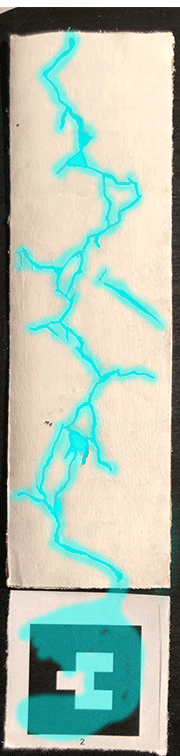
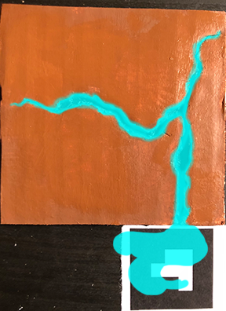

My initial idea for this project was clutter. The direction for it changed as I started researching bioluminescence for a personal project. IMages of glowworms in the cracks of cabe walls made me think of the i I made two mock up cracks and created glowing light over the top. I had hoped to make the images into gifs to add to the glowing effect. The project uses the default A-Frame barcodes 1 and 2, so the piece is viewable even without the cracks that shoulf accompany it. I found some limitations to A-Frame in terms of using gifs, and on mobile where videos cannot autoplay. The gif on the left uses barcode 2 and is a my intended vision for the cracks and above is the still image of the transprent PNG over the crack viewable with barcode 1. The image on barcode 1 has the transparency i had hoped for; the video for barcode 2 is animated but not transparent. I think this idea would work better with something location based, and may persue that idea in a later project. Currently, barcode 2 only works on with a computer. On mobile it is simply a black rectangle.